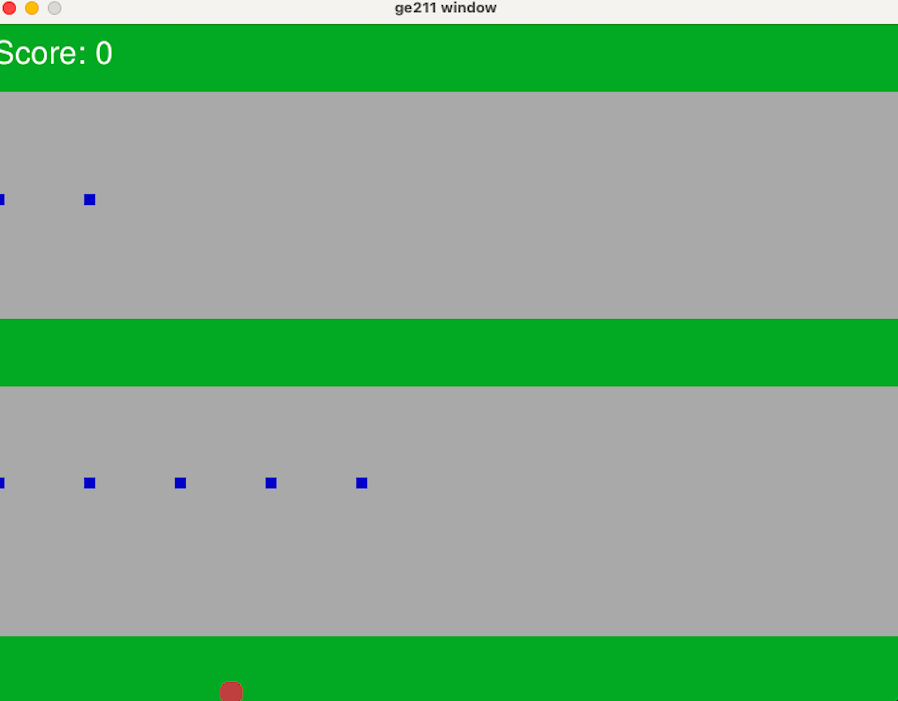
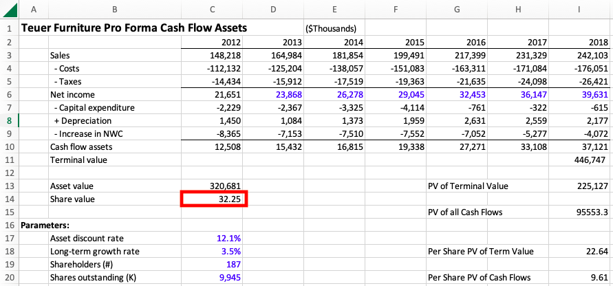

HI, I'M CONSTANZA!
I am a Junior at Northwestern University
from New York City, studying Economics
and Computer Science with a Kellogg
Certificate in Financial Economics.
TAKE A LOOK AT SOME OF MY PAST WORKS:
Frogger
This is a game I programmed in c++ for my final project in my
Fundamentals of Computer Programming class. It is a remake of
the old 1980's arcade game, Frogger. The player is the red ball
shown in the screenshot. Their objective is to cross the two
grey streets without getting hit by one of the consistently,
randomly moving blue cars. Every time the player makes it all
the way, the player "dies" and the screen turns red.
Teuer Furniture Valuation
This is a case assignment that I completed for my Kellogg Principles
of Finance class. The assignment was to complete a valuation of a
furniture company called Teuer Furniture, using both a discounted
cash flow analysis (DCF), and a public comparables analysis. Click
here to learn more!